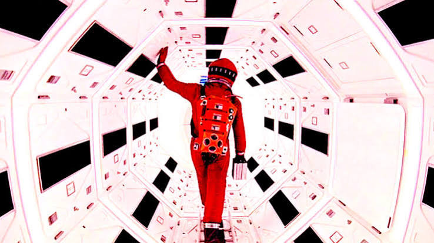
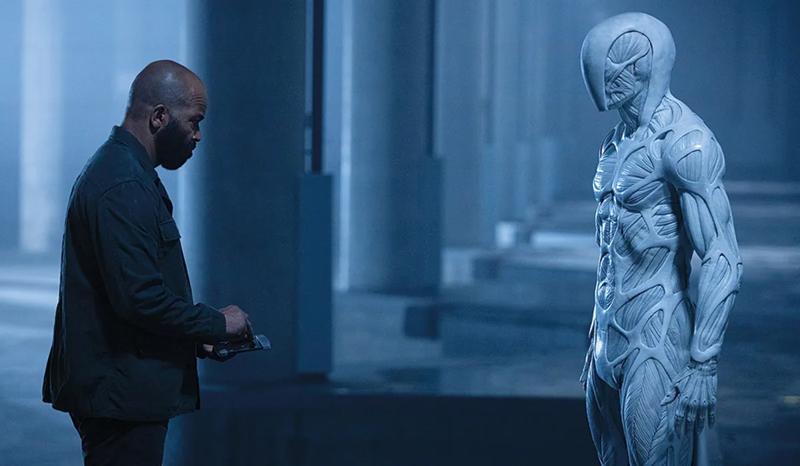
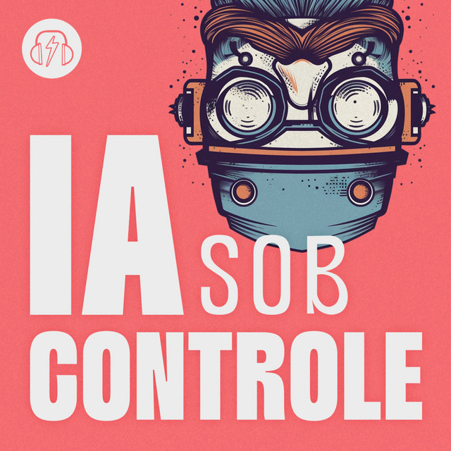
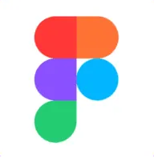
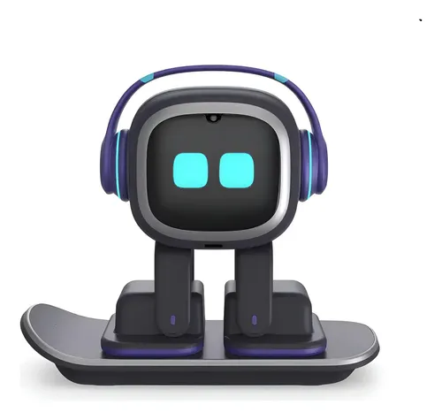
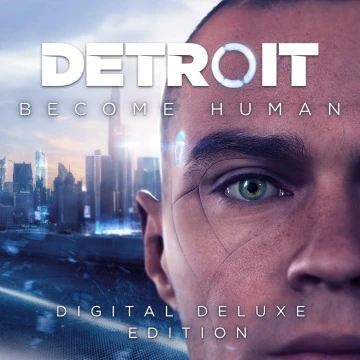

Filmes e Séries
Descubra clássicos do cinema e da televisão.
2001: Uma Odisséia no Espaço (1968)

Um filme épico de ficção científica dirigido por Stanley Kubrick, explorando a evolução humana e a inteligência artificial.
O Jogo da Imitação (2014)
Um drama cinebiográfico dirigido por Morten Tyldum, baseado na história real de Alan Turing.
Westworld (2016)

Uma série de ficção científica criada por Jonathan Nolan e Lisa Joy, explorando temas de inteligência artificial e ética.
Música e Podcasts
Descubra mais sobre músicas e podcasts.
IA sob controle (2024)

Um podcast que explora os impactos da inteligência artificial na sociedade.
Café da Manhã (2019)
Um podcast jornalístico que discute, em alguns episódios, os avanços tecnológicos e suas implicações na vida quotidiana.
Suno
Uma plataforma para ouvir e criar música usando uma inteligência artificial.
Games e Tecnologia
Explore o mundo dos games e da tecnologia.
Figma

O site possui um gerador de conteúdo, incluindo jogos, baseado em inteligência artificial.
Emo robot

Um robô de entretenimento com inteligência artificial.
Detroit: Become Human (2018)

Um jogo de aventura interativo desenvolvido pela Quantic Dream, que explora a vida de androides em um futuro próximo.